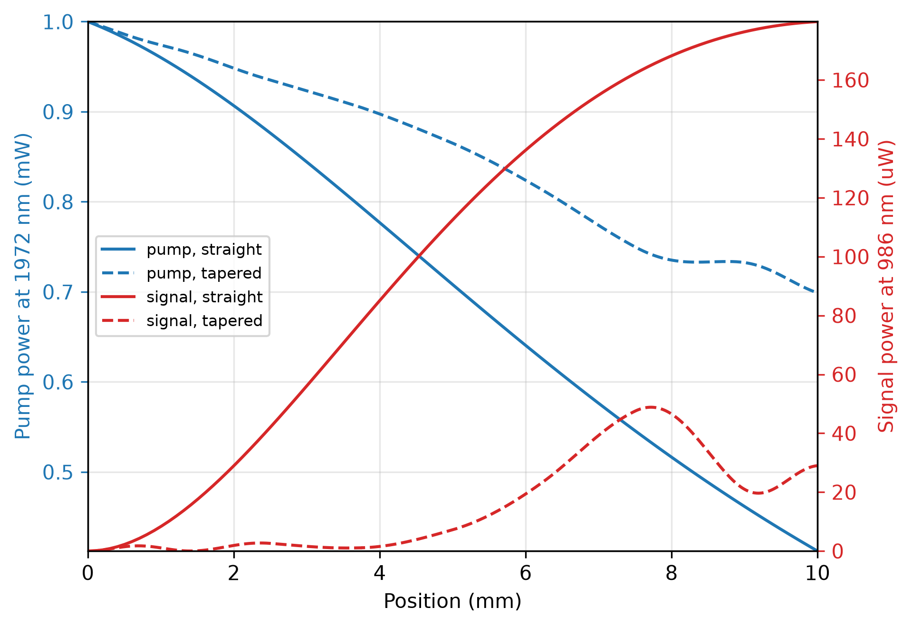
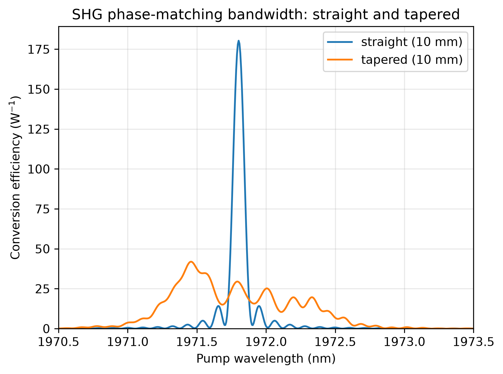
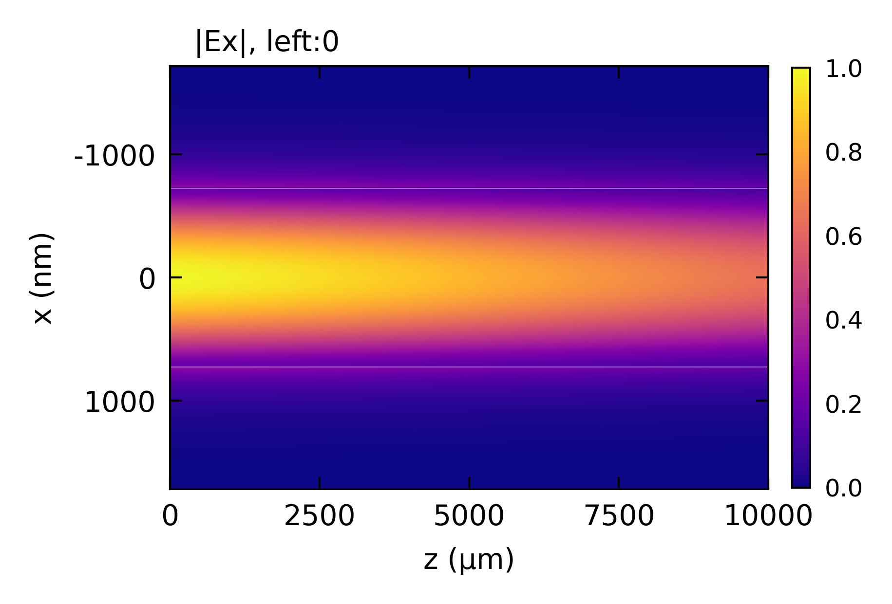
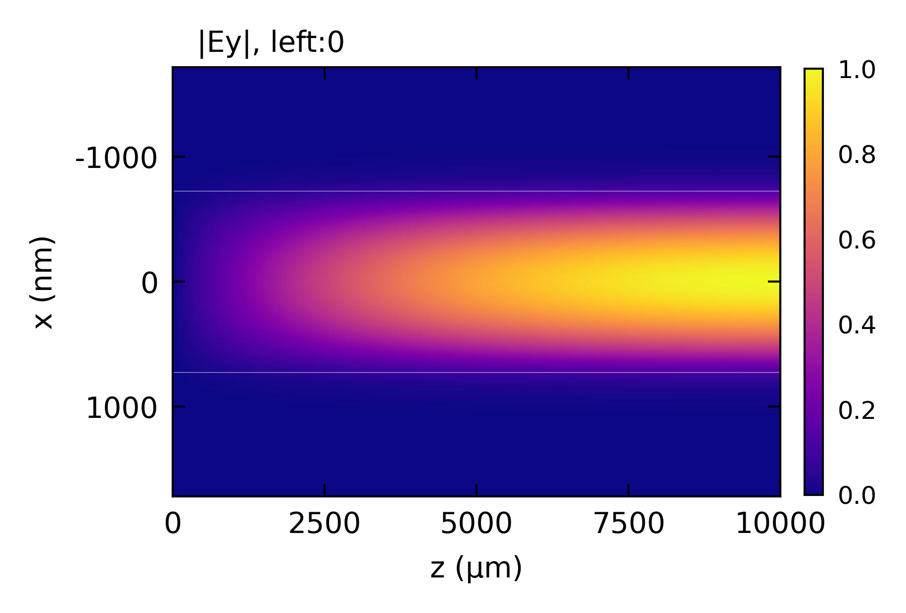
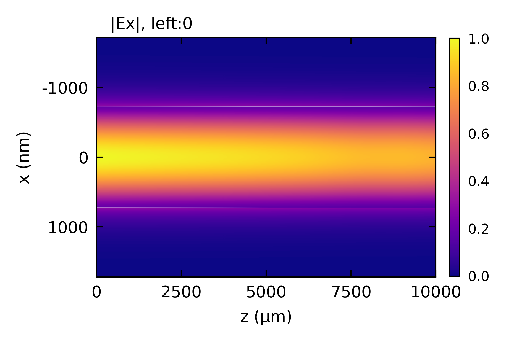
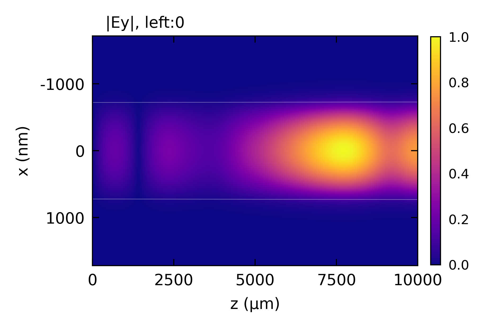

Nonlinear-EME: SHG
Second-harmonic generation in a GaAs-on-insulator waveguide, straight and tapered, following Stanton et al., Opt. Express 28, 9521 (2020) and Stanton, Spott and Stanton, Proc. SPIE 13890, 138900A (2026).
Highlighted features: nonlinear with an SHGProcess on a straight and a tapered section,
roughness_rms with apply_scattering for roughness-limited propagation loss, and
chi2_spectrum for both phase-matching bandwidths.
This code example is licensed under the BSD 3-Clause License.
import sys
import numpy as np
import emodeconnection as emc
from matplotlib import pyplot as plt
## GaAs-on-insulator SHG: a TE 1972 nm pump generating a TM 986 nm second harmonic.
## Geometry, roughness and loss from Stanton et al., Opt. Express 28, 9521 (2020).
## The straight and tapered comparison follows Stanton, et al., Proc.
## SPIE 13890, 138900A (2026), doi:10.1117/12.3079411.
## Set simulation parameters
pump_wavelength = 1971.805 # [nm] TE00 pump
signal_wavelength = pump_wavelength / 2 # [nm] second harmonic
dx, dy = 10, 10 # [nm] resolution
w_core = 1450 # [nm] core width at best phase-matching
w_trench = 1000 # [nm] side trench width
h_core = 150 # [nm] core height
h_clad = 1200 # [nm] top/bottom cladding
roughness_rms = [4.5, 0.2] # [nm]
correlation_length = [100.0, 100.0] # [nm]
window_width = w_core + 2 * w_trench
window_height = h_core + 2 * h_clad
pump_power = 1e-3 # [W] 1 mW pump
spectrum_points = 501 # wavelengths reported by each scan
signal_search_modes = 4 # enough to contain the phase-matched mode
index_margin = 0.005 # how far above the pump index to limit the harmonic mode list
def build_gaas_profile(em, mask_width, pump_name, signal_name, profile_set_name,
signal_index_cap=None):
"""TE pump and TM signal profiles at one core width, as a two-wavelength set.
Returns the pump index, the harmonic mode list from the search,
and the index of the matched mode in it.
"""
em.settings(
wavelength=pump_wavelength, x_resolution=dx, y_resolution=dy,
window_width=window_width, window_height=window_height,
num_modes=1, boundary_condition='TE', background_material='Air',
max_effective_index=0)
em.shape(name='BOX', material='SiO2', height=h_clad)
em.shape(name='core', material='GaAs', height=h_core, etch_depth=h_core, mask=mask_width,
roughness_rms=roughness_rms, correlation_length=correlation_length)
## scattering=True stores each mode's roughness-limited loss, which
## apply_scattering then folds into the propagation constants.
em.FDM(scattering=True)
em.label_profile(name=pump_name)
n_pump = np.real(em.get('effective_index'))[0]
n_signal, i_signal = np.array([]), 0
if signal_index_cap is None:
em.settings(wavelength=signal_wavelength, num_modes=signal_search_modes,
boundary_condition='TM', max_effective_index=0)
em.FDM(scattering=True)
n_signal = np.real(em.get('effective_index'))
i_signal = int(np.argmin(np.abs(n_signal - n_pump)))
signal_index_cap = n_pump + index_margin
em.settings(wavelength=signal_wavelength, num_modes=1, boundary_condition='TM',
max_effective_index=signal_index_cap)
em.FDM(scattering=True)
em.label_profile(name=signal_name)
em.create_profile_set(profiles=[pump_name, signal_name],
profile_set_name=profile_set_name)
return n_pump, n_signal, i_signal
## Part 1: SHG in a straight waveguide
em = emc.EMode(emode_cmd=sys.argv[1:], simulation_name='shg_straight')
em.EME_settings(apply_scattering=True)
n_pump, n_signal_all, i_signal = build_gaas_profile(em, w_core, 'pump', 'signal', 'wg')
signal_index_cap = n_pump + index_margin
def by_wavelength(em, key, wavelength):
"""One wavelength's entry from a multi-wavelength profile's result."""
d = {float(k): np.atleast_1d(v) for k, v in em.get(key, profile='wg').items()}
return d[min(d, key=lambda k: abs(k - wavelength))]
## Roughness-limited loss
loss_pump = by_wavelength(em, 'scattering_loss', pump_wavelength)[0]
loss_signal = by_wavelength(em, 'scattering_loss', signal_wavelength)[0]
n_signal = by_wavelength(em, 'effective_index', signal_wavelength).real[0]
print(f'harmonic mode list: {np.array2string(n_signal_all, precision=5)}')
print(f'pump mode 0: n_eff {n_pump:.5f}, {loss_pump / 100:.2f} dB/cm (measured 1.5)')
print(f'signal mode {i_signal} of {signal_search_modes}: n_eff {n_signal:.5f}, '
f'{loss_signal / 100:.2f} dB/cm (measured 16.8)')
design_length = 10e6 # [nm]
em.straight_section(
name='wg_section', profile='wg', length=design_length,
nonlinear=emc.SHGProcess(pump_wavelength=pump_wavelength))
em.settings(excitation=emc.Source(port='left', wavelength=pump_wavelength, power=pump_power))
## Phase-matching bandwidth at the design length, over a full nanometer. The
## spectrum has to be evaluated point by point, but the coupling behind it varies
## smoothly, so chi2_spectrum() solves the modes only where the mode list moves.
## It runs before the design-point solve rather than after: it re-solves the
## section at every wavelength it samples, and the profiles it leaves behind have
## lost their scattering data, so the rebuild below has to happen either way.
## Solving after it means that rebuild is the design point, not a repeat of it.
straight_scan = em.chi2_spectrum(
values=np.linspace(1970.5, 1973.5, spectrum_points), tolerance=2e-3)
wl_straight = straight_scan['values']
## Normalized efficiency, signal power over pump power squared, in W^-1. That is
## drive-independent only while conversion stays small, and this device is well
## into depletion at 1 mW.
eff_straight = np.array(straight_scan['conversion']) / pump_power
print(f'straight spectrum: {len(straight_scan["solved_wavelengths"])} solves for '
f'{len(wl_straight)} wavelengths')
## Back to the design pair. This is the solve every number below describes, and
## the state the saved file keeps for plot()'s z-x field panels.
build_gaas_profile(em, w_core, 'pump', 'signal', 'wg', signal_index_cap=signal_index_cap)
em.straight_section(
name='wg_section', profile='wg', length=design_length,
nonlinear=emc.SHGProcess(pump_wavelength=pump_wavelength))
em.settings(excitation=emc.Source(port='left', wavelength=pump_wavelength, power=pump_power))
s = em.EME()
r = em.get('response')
print(f'straight waveguide @ L = {design_length * 1e-6:.1f} mm:')
print(f' pump in = {r.power("left", pump_wavelength, direction="in") * 1e3:.4f} mW')
print(f' pump out = {r.power("right", pump_wavelength) * 1e3:.4f} mW')
print(f' signal out = {r.power("right", signal_wavelength) * 1e6:.4f} uW')
print(f' conversion = {r.power("right", signal_wavelength) / pump_power * 100:.2f} %')
## Power evolution along the waveguide
z_pump_straight, p_pump_straight = r.power_vs_z(pump_wavelength)
z_signal_straight, p_signal_straight = r.power_vs_z(signal_wavelength)
em.close()
## Part 2: SHG in a tapered waveguide, which trades peak conversion for width
## tolerance.
em2 = emc.EMode(emode_cmd=sys.argv[1:], simulation_name='shg_taper')
em2.EME_settings(apply_scattering=True)
taper_fraction = 0.005 # +/- 0.5% width sweep, 1% total, as in the SPIE paper
mask_start = w_core * (1 - taper_fraction)
mask_end = w_core * (1 + taper_fraction)
taper_length = design_length # [nm] same length, so the comparison is fair
## The automatic z-slicing splits on how much the mode list changes, which for a
## 1% taper is almost nothing, and it is not aware of the chi(2) phase mismatch,
## which is what actually varies along the guide. So slice uniformly instead: a
## negligible overlap_variation always asks to split, and minimum_z_step decides
## where to stop.
##
## refine() works by bisection, so the slice count is always a power of two and
## this number is a ceiling rather than a target. A slice is split while half its
## length still reaches minimum_z_step, which means 8 and 12 both settle at 8
## slices and 16 is the next step up, at twice the cross-section solves. Raising
## it is how to check the answer has converged.
taper_slices = 8
build_gaas_profile(em2, mask_start, 'start_pump', 'start_signal', 'taper_start',
signal_index_cap=signal_index_cap)
build_gaas_profile(em2, mask_end, 'end_pump', 'end_signal', 'taper_end',
signal_index_cap=signal_index_cap)
em2.taper_section(
name='taper_section', profile='taper_start', profile_end='taper_end',
length=taper_length, nonlinear=emc.SHGProcess(pump_wavelength=pump_wavelength),
settings={'overlap_variation': 1e-9,
'minimum_z_step': taper_length / taper_slices})
em2.settings(excitation=emc.Source(port='left', wavelength=pump_wavelength, power=pump_power))
## Phase-matching bandwidth of the taper, over the same range as the straight
## device so the two can be plotted together.
taper_scan = em2.chi2_spectrum(
values=np.linspace(1970.5, 1973.5, spectrum_points), tolerance=1e-3)
wl_taper = taper_scan['values']
eff_taper = np.array(taper_scan['conversion']) / pump_power
print(f'taper spectrum: {len(taper_scan["solved_wavelengths"])} solves for '
f'{len(wl_taper)} wavelengths')
if taper_scan['unconverged']:
print(f' unresolved intervals: {taper_scan["unconverged"]}')
## Back to the design pair, for the same reason as the straight device: this is
## the solve every number below describes, and the state the saved file keeps.
build_gaas_profile(em2, mask_start, 'start_pump', 'start_signal', 'taper_start',
signal_index_cap=signal_index_cap)
build_gaas_profile(em2, mask_end, 'end_pump', 'end_signal', 'taper_end',
signal_index_cap=signal_index_cap)
em2.taper_section(
name='taper_section', profile='taper_start', profile_end='taper_end',
length=taper_length, nonlinear=emc.SHGProcess(pump_wavelength=pump_wavelength),
settings={'overlap_variation': 1e-9,
'minimum_z_step': taper_length / taper_slices})
em2.settings(excitation=emc.Source(port='left', wavelength=pump_wavelength, power=pump_power))
s2 = em2.EME()
r2 = em2.get('response')
print(f'tapered waveguide @ L = {taper_length * 1e-6:.1f} mm:')
print(f' pump in = {r2.power("left", pump_wavelength, direction="in") * 1e3:.4f} mW')
print(f' pump out = {r2.power("right", pump_wavelength) * 1e3:.4f} mW')
print(f' signal out = {r2.power("right", signal_wavelength) * 1e6:.4f} uW')
print(f' conversion = {r2.power("right", signal_wavelength) / pump_power * 100:.2f} %')
## The taper's own power evolution, again from the solve just run. A refined
## taper is many chi(2) slices, and power_vs_z stitches them into one curve.
z_pump_taper, p_pump_taper = r2.power_vs_z(pump_wavelength)
z_signal_taper, p_signal_taper = r2.power_vs_z(signal_wavelength)
em2.close()
## Pump and second harmonic along both devices, on one pair of axes. The pump
## is milliwatts and the signal microwatts, so the signal gets its own scale.
fig, ax = plt.subplots(figsize=(6.5, 4.5))
ax_signal = ax.twinx()
ax.plot(z_pump_straight * 1e-6, p_pump_straight * 1e3, color='C0',
label='pump, straight')
ax.plot(z_pump_taper * 1e-6, p_pump_taper * 1e3, color='C0', ls='--',
label='pump, tapered')
ax_signal.plot(z_signal_straight * 1e-6, p_signal_straight * 1e6, color='C3',
label='signal, straight')
ax_signal.plot(z_signal_taper * 1e-6, p_signal_taper * 1e6, color='C3', ls='--',
label='signal, tapered')
ax.set_xlabel('Position (mm)')
ax.set_ylabel(f'Pump power at {pump_wavelength:.0f} nm (mW)', color='C0')
ax_signal.set_ylabel(f'Signal power at {signal_wavelength:.0f} nm (uW)', color='C3')
ax.tick_params(axis='y', colors='C0')
ax_signal.tick_params(axis='y', colors='C3')
handles = ax.get_legend_handles_labels()[0] + ax_signal.get_legend_handles_labels()[0]
labels = ax.get_legend_handles_labels()[1] + ax_signal.get_legend_handles_labels()[1]
ax.set_ymargin(0)
ax.set_xmargin(0)
ax_signal.set_ymargin(0)
ax_signal.set_xmargin(0)
## Left of center is the one clear patch: the pump curves run along the top of
## the panel and the harmonic along the bottom until it has built up.
ax.legend(handles, labels, fontsize=8, loc='center left')
ax.grid(True, alpha=0.3)
fig.tight_layout()
fig.savefig('shg_power_vs_length.png', dpi=300, bbox_inches='tight')
## The taper trades peak conversion for bandwidth: a band about 1.5 nm wide at
## roughly a fifth of the height, against the straight waveguide's much taller
## and much narrower peak. The band's ripple tracks the slice count rather than
## the geometry, so it is the envelope that is the result, not the fine structure.
plt.figure(figsize=(6, 4.5))
plt.plot(wl_straight, eff_straight,
label=f'straight ({design_length * 1e-6:.0f} mm)')
plt.plot(wl_taper, eff_taper,
label=f'tapered ({taper_length * 1e-6:.0f} mm)')
plt.xlabel('Pump wavelength (nm)')
plt.ylabel('Conversion efficiency (W$^{-1}$)')
plt.title('SHG phase-matching bandwidth: straight and tapered')
plt.legend()
plt.grid(True, alpha=0.3)
plt.ylim(bottom=0)
plt.margins(x=0)
plt.tight_layout()
plt.savefig('shg_bandwidth.png', dpi=300, bbox_inches='tight')
Console output:
EMode3D 1.0.4 - email
Meshing completed in 0.8 sec
Solving modes completed in 2.3 sec
Meshing completed in 0.8 sec
Solving modes completed in 2.7 sec
Meshing completed in 0.8 sec
Solving modes completed in 1.3 sec
Scanning wg_section over 1970.5-1973.5 nm... completed in 3 min 48.6 sec
Meshing completed in 0.8 sec
Solving modes completed in 2.3 sec
Meshing completed in 0.8 sec
Solving modes completed in 1.3 sec
Solving S-matrices...
Solving section: wg_section... completed in 0.2 sec
completed in 0.2 sec
Exited EMode
EMode3D 1.0.4 - email
Meshing completed in 0.8 sec
Solving modes completed in 2.4 sec
Meshing completed in 0.8 sec
Solving modes completed in 1.3 sec
Meshing completed in 0.8 sec
Solving modes completed in 2.4 sec
Meshing completed in 0.8 sec
Solving modes completed in 1.2 sec
Scanning taper_section over 1970.5-1973.5 nm... completed in 11 min 55.3 sec
Meshing completed in 0.8 sec
Solving modes completed in 2.3 sec
Meshing completed in 0.8 sec
Solving modes completed in 1.3 sec
Meshing completed in 0.8 sec
Solving modes completed in 2.3 sec
Meshing completed in 0.8 sec
Solving modes completed in 1.2 sec
Solving S-matrices...
Solving section: taper_section... completed in 42.5 sec
completed in 42.5 sec
Exited EMode
harmonic mode list: [2.83814 2.58442 2.09994 2.06181]
pump mode 0: n_eff 2.06182, 1.38 dB/cm (measured 1.5)
signal mode 3 of 4: n_eff 2.06181, 7.83 dB/cm (measured 16.8)
straight spectrum: 5 solves for 501 wavelengths
straight waveguide @ L = 10.0 mm:
pump in = 1.0000 mW
pump out = 0.4122 mW
signal out = 179.7960 uW
conversion = 17.98 %
taper spectrum: 5 solves for 501 wavelengths
tapered waveguide @ L = 10.0 mm:
pump in = 1.0000 mW
pump out = 0.6988 mW
signal out = 28.9880 uW
conversion = 2.90 %
Figures:





